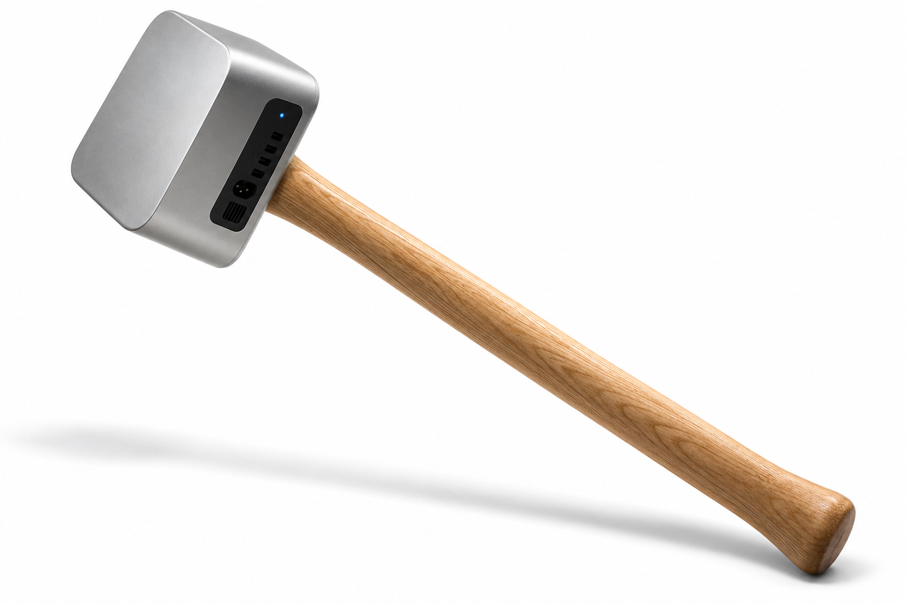

Desktop Hosting · WebClerk · JPods
Apple has already done this once. It was called Desktop Publishing.
In 1985 a Macintosh, a LaserWriter and PageMaker took the press out of the publishing house and put it on a desk. The same move is available now in commerce: a Mac mini, free open-source software, and a tunnel out to the web. One business, one box, its own server — not a tenant on someone else's.

{kind=link}
Sovereignty
The customer list, the prices and the books sit on a machine the owner bought. No terms of service stand between a business and its own records, and no one else can change them on a Tuesday.
Control
The business sets its own prices, keeps its own customers, and holds the off switch. Cut the network and the counter still rings up a sale; a tenant on a platform cut off from the platform has nothing.
Empowerment
WebClerk is free and open source. When the software costs nothing, the only thing left to buy is the computer — which is exactly what happened to the LaserWriter in 1985.
1984, with the parts named
- Hammerhead
- Mac mini. The mass that does the work — bought once, owned outright.
- Handle
- WebClerk. Free and open source: what the hand actually holds.
- The path
- Desktop Hosting. Own hardware, own records, own terms — the throw becomes possible.
- The thrower
- Each individual. Thirty-four million of them, one desk at a time.

The screen in the ad was somebody else’s platform. Desktop Hosting is the path to it, and every desk it reaches is another thrower.
What runs on the box
WebClerk (quotes, orders, invoices, inventory, payments, general ledger), PostgreSQL holding the business's own records, and Alice — the agent that watches the books and speaks up when something is out of step. A Cloudflare tunnel carries the public site outbound; nothing inbound is opened.
It is already running
This page, webclerk.com, and a live demo store are served from one small box on a desk. The architecture is not a proposal — the only substitution the pitch asks for is the hardware underneath it.
The scale
Roughly 34 million small businesses in the United States. Desktop Publishing sold Macintoshes because PageMaker existed. Free commerce software sells the machine it has to run on.